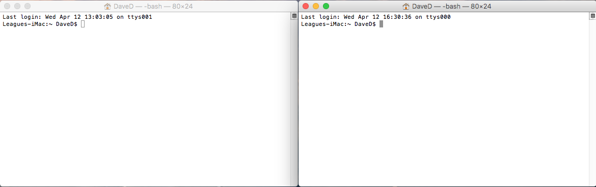
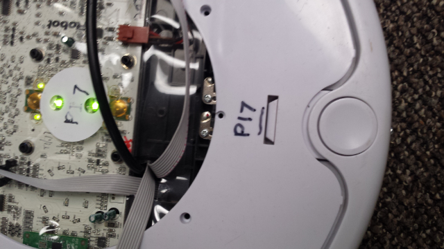
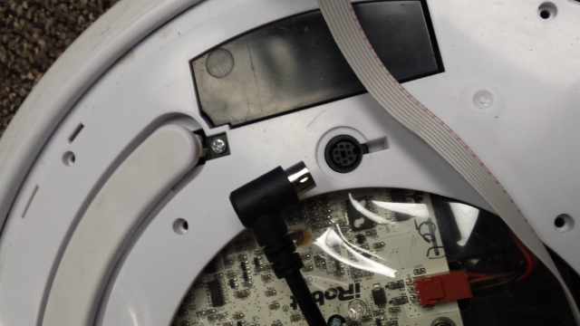
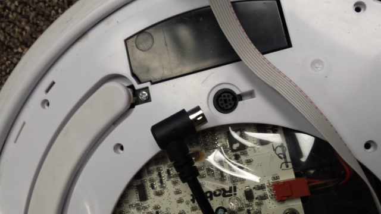

iARoC iRobot Create 2 Instructions
Step 1:
Step 2:
Write your code in the setup and loop methods.
Step 3:
Export your code as a runnable jar.


Under Launch Configurations, select the class containing the main method for your CleverRPiRobot project.
Under Export destination, select the location of your jar file. The desktop is probably the easiest location to find.
Then click finish.

Click OK

Click OK again

Step 4:
Open two terminal windows.

Navigate one of them to the directory that you saved the jar file.
cd Desktop

Step 5:
Copy the jar file to the robot's Raspberry Pi.
scp CleverRPiRobot.jar pi@rpi7:
Change the '7' to the actual number of your robot.

Type 'yes' when prompted. This should only happen the first time.

If you get the following error, make sure that the Rasperry Pi is connected to the robot.
 

When prompted for the password, type in 'pi'.

If the transfer was successful, you should see this:

Step 6:
In the other terminal window, connect to the robot's Rasperry Pi.
ssh pi@rpi7.local
Change the '7' to the actual number of your robot.

If successfully connected, it should look like this:

Step 7:
Once connected to the Pi, you can run the program. Be sure to use 'sudo'.
sudo java -jar CleverRPiRobot.jar

Step 8:
If the robot starts to beep, then it is ready to run your code. Press the 'clean' button on the robot to start the program.